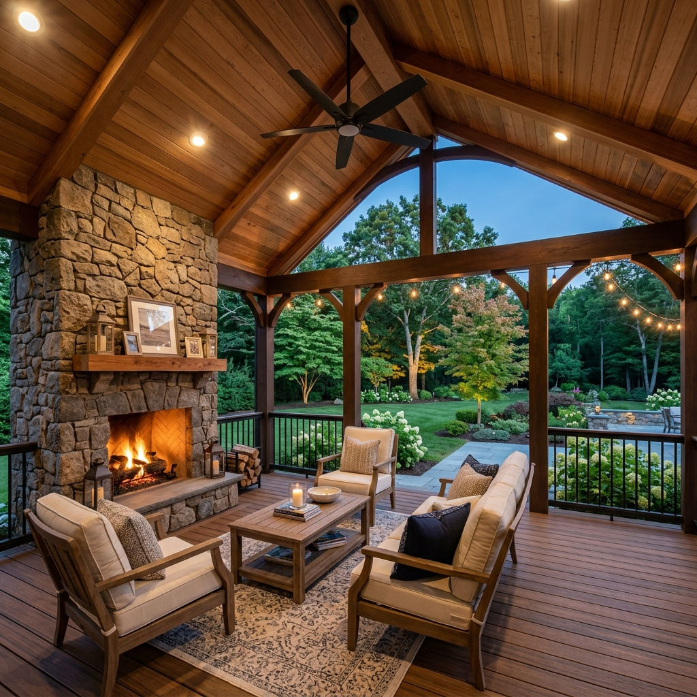
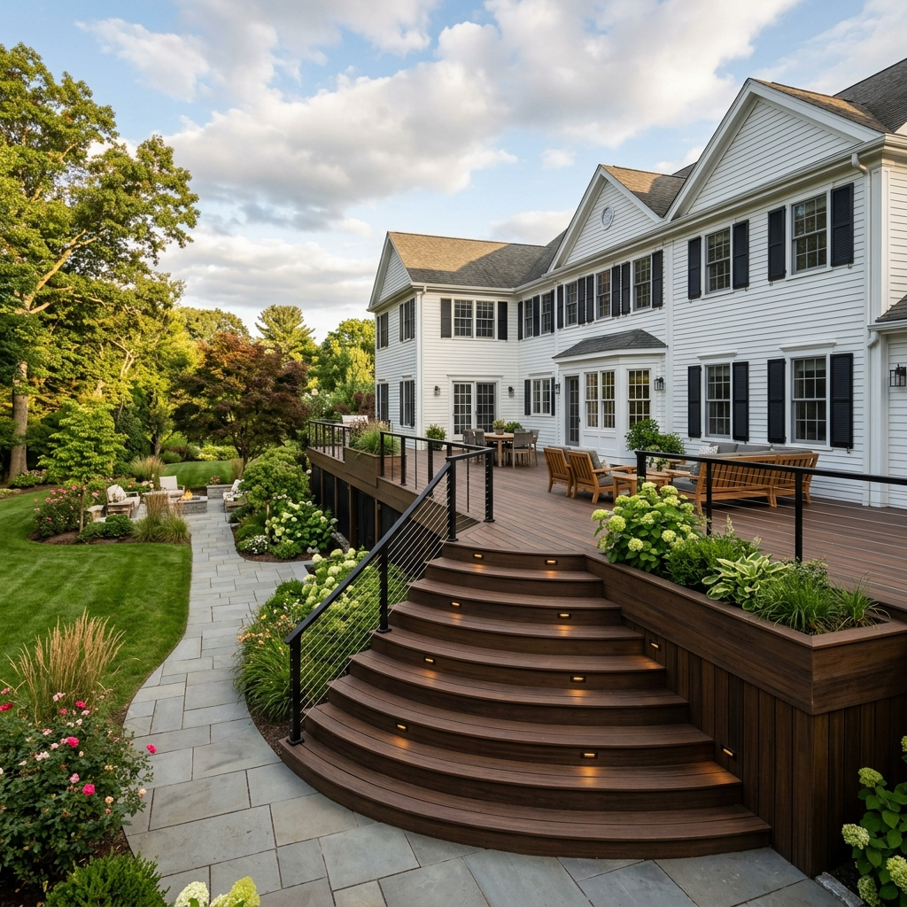
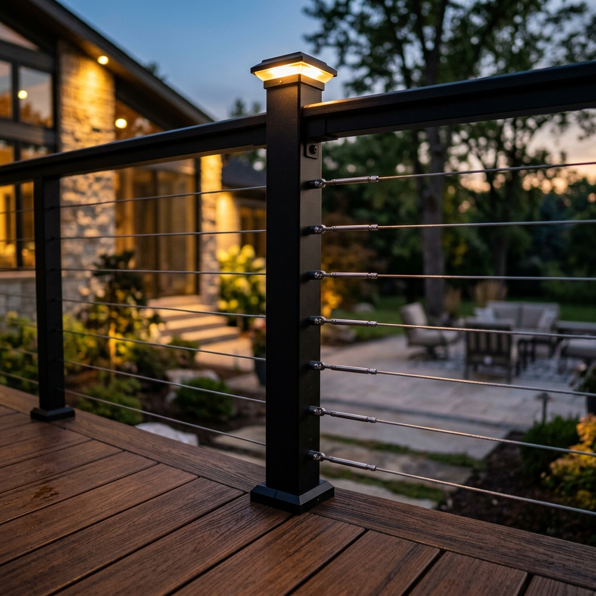
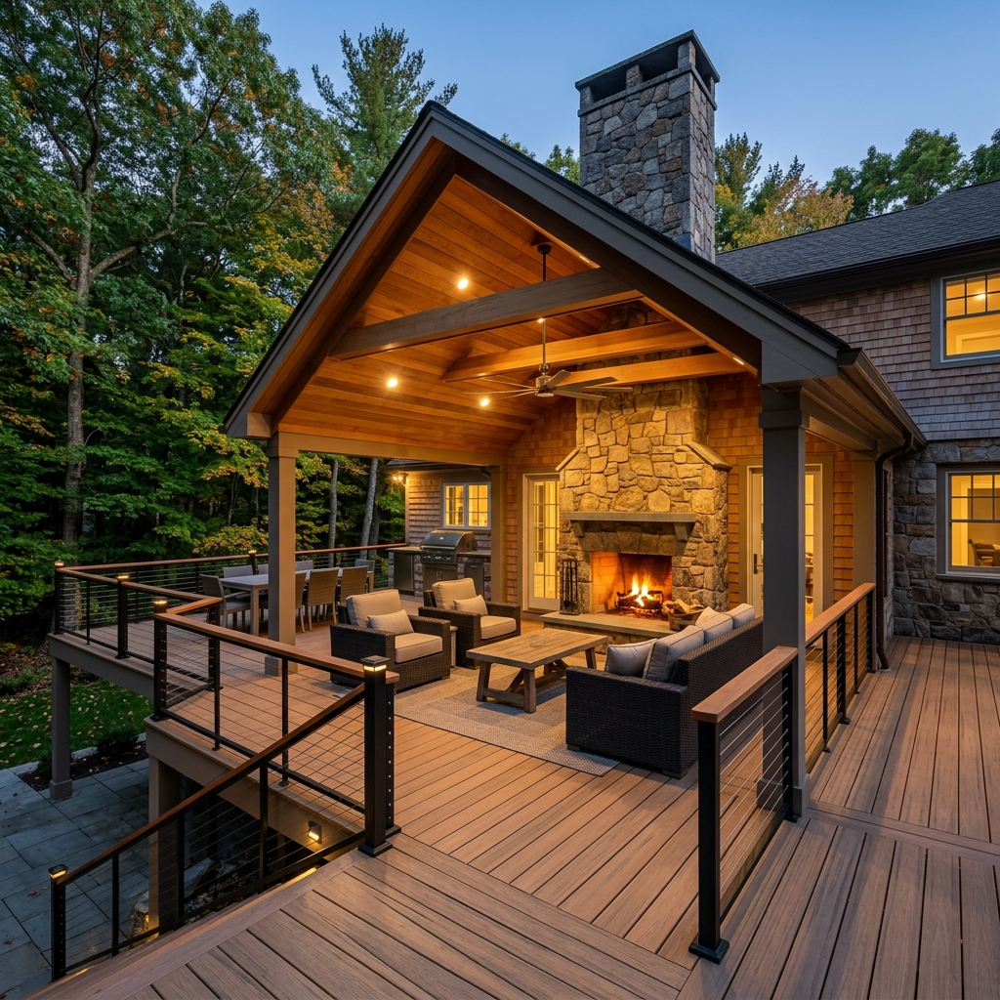

From Vision to Reality
We designed our process to eliminate uncertainty and deliver a premium experience at every stage. Each step is structured to keep you informed, involved, and confident — from the moment we meet to the day we hand you the keys to your new outdoor living space.

Private Design Consultation
Every project begins with a private, on-site consultation at your home. We walk your property together, discuss how you envision using your outdoor space, evaluate the existing conditions, and explore the possibilities that your home and landscape present. This is not a sales call — it is a design conversation.
What to Expect
- A private visit to your property — scheduled at your convenience
- Discussion of your goals, lifestyle, and design preferences
- Assessment of your home's architecture and existing outdoor conditions
- Initial ideas for layout, materials, and features
- Honest conversation about investment range and project timeline

Concept & Scope
Once we understand your vision, we develop a comprehensive design direction. This includes the layout, spatial flow, feature set, material palette, and a transparent investment range — all tailored to complement the architecture and value of your home. You receive a detailed proposal that leaves nothing to interpretation.
What to Expect
- A refined design concept aligned with your home's architectural style
- Detailed scope of work with clear specifications
- Material recommendations with samples when available
- Transparent investment range — no hidden costs or surprises
- Collaborative revisions until the design feels right

Planning & Permits
We handle the details that most homeowners never want to think about. Our team prepares detailed construction drawings, coordinates with local municipalities, and manages the full permitting process. Every project is designed and built to exceed Massachusetts building codes — ensuring structural integrity, safety, and long-term compliance.
What to Expect
- Professional construction drawings prepared for your project
- Full permit coordination with your local building department
- Compliance with Massachusetts building codes and zoning requirements
- HOA coordination when applicable
- A clear construction timeline before any work begins

Material Selection
The materials define the character of your outdoor space. We guide you through a curated selection of premium decking, railings, lighting, and finishing details — each chosen for its durability, aesthetics, and performance in New England's demanding climate. Every recommendation reflects decades of experience with what lasts and what looks exceptional over time.
What to Expect
- Guided selection of premium composite, PVC, or hardwood decking
- Railing options including aluminum, cable, and glass systems
- Integrated lighting design — low-voltage LED for ambiance and safety
- Hidden fastener systems and architectural finishing details
- Color and texture coordination to complement your home's palette

Construction
This is where craftsmanship meets precision. Our team executes the build with meticulous attention to detail, daily site management, and the clear communication you deserve. We treat your property with the respect and care it demands — maintaining a clean, organized work environment throughout the entire project duration.
What to Expect
- A dedicated project lead managing your build from start to finish
- Daily site cleanup — your property stays organized and respected
- Regular progress updates with photos and milestone communication
- Skilled craftsmen with years of experience in premium outdoor construction
- Strict adherence to the approved design, timeline, and specifications

Final Walkthrough
Before we consider any project complete, we walk through every detail together. This is your opportunity to inspect the craftsmanship, ask questions, and confirm that every element meets your expectations. We provide warranty documentation, care instructions, and the confidence that your investment is protected for years to come.
What to Expect
- A thorough walkthrough of every detail with your project lead
- Opportunity to review craftsmanship, finishes, and functionality
- Warranty documentation and material care guidelines
- Final site cleanup — your property is left pristine
- Ongoing support — we stand behind our work long after completion
Our Promise to You
We stand behind every project we build. Your outdoor living space is an investment in your home — and we protect that investment with the standards, warranties, and ongoing support you deserve.
Workmanship Warranty
Every project is backed by our comprehensive workmanship warranty. If anything falls short of our standards, we make it right — no questions asked.
Material Warranties
We work exclusively with premium manufacturers who offer industry-leading warranties — up to 25 years on composite decking and lifetime warranties on select railing systems.
Complete Documentation
You receive a comprehensive project file including warranty certificates, material specifications, care guidelines, and permit documentation — everything organized for your records.
Ongoing Support
Our relationship does not end at the final walkthrough. We are available for questions, seasonal guidance, and any support your outdoor space may need — now and in the years ahead.
Frequently Asked Questions
We believe in transparency at every stage. Here are answers to the questions homeowners most commonly ask about our design-build process.
How long does a typical deck project take from start to finish?
Most custom deck projects are completed within 2 to 4 weeks of construction, depending on scope and complexity. The full design-build timeline — from initial consultation through permitting and construction — typically spans 6 to 10 weeks. More complex outdoor living spaces with covered structures, kitchens, or multi-level designs may extend beyond this range. We provide a detailed project schedule during the Concept & Scope phase so you always know exactly what to expect and when.
What happens if unexpected issues arise during construction?
We conduct thorough assessments during the consultation and planning phases to minimize surprises. However, if unforeseen conditions arise — such as structural concerns beneath an existing deck, unexpected drainage issues, or soil conditions that require additional foundation work — we communicate with you immediately and present solutions with transparent pricing before proceeding. There are never hidden charges or unauthorized changes to your project. Your trust is the foundation of our business.
Do I need to be home during construction?
You do not need to be home during construction. Our team is fully self-sufficient and treats every property with the highest level of respect and care. We provide regular photo updates and progress reports throughout the build, so you are always informed regardless of your schedule. That said, we do recommend being available for the initial consultation and the final walkthrough — these two touchpoints ensure every detail reflects your vision and meets your expectations.
Ready to Begin Your Project?
Schedule a private design consultation and experience the Skills Deck Builders process firsthand. We look forward to learning about your vision.
Schedule Your Design ConsultationOr call (774) 423-9786